The effects of export price shocks and global
financial conditions in Latin America:
evidence from a sign-restricted VAR analysis
Academic Year 2025/2026
Abstract
This research investigates whether export price shocks act as a transmission mechanism generating comovement between output and capital flows in a sample of small-open commodity-exporting economies, namely Argentina, Brazil, Chile, Colombia, Ecuador, Mexico, Peru and Venezuela. In particular, the analysis examines whether changes in export prices simultaneously affect domestic economic activity and financial inflows. In addition, the research evaluates the role of global financial conditions by analysing the impact of external financial shocks and their interaction with export price dynamics. Finally, it investigates how export price shocks influence the composition of capital inflows.
Introduction
Developing countries characterised by resource-abundance are usually strongly dependent on commodity exports and Latin American economies are no exception. To better contextualise, more than a quarter of the world’s major metal ore reserves are located within Latin American countries and the Caribbean region. Its endowment is further enriched by being the fifth region in terms of hydrocarbon reserves.1 Being a resource-abundant economy is a significant advantage, especially in terms of export competitiveness.
Building on the existing literature on commodity price shocks, this research analyses the effects of export price shocks in a sample of small-open Latin American economies, which are heavily endowed with natural resources and exhibit a high, but not homogeneous, degree of export-dependence. In performing this analysis, the countries studied are Argentina, Brazil, Chile, Colombia, Ecuador, Mexico, Peru and Venezuela.
The central research question guiding this analysis is therefore the following: do export price shocks in resource-rich and export-dependent Latin American economies contribute to the comovement between economic activity and capital flows? In other words, can external export price fluctuations simultaneously influence real economic activity and financial flows in a way that generates positive comovement between output and cross-border capital dynamics? Addressing this question is particularly relevant for economies where export revenues constitute one of the main sources of foreign currency earnings and where external financing plays a key role in supporting domestic investment and growth.
Taken together, the objective of this research is not only to quantify the direct macroeconomic effects of export price shocks, but also to clarify whether these shocks act as a key mechanism linking real economic fluctuations and cross-border financial movements in Latin American commodity-exporting economies.
The research then investigates whether there is a relationship between export price shocks and sovereign risk conditions in commodity-exporting countries. The analysis also investigates whether these effects are temporary or characterised by persistency over time.
To better understand the role of an increase in the export price level in relation to eased global financial conditions, the effect of a global financial condition shock is also studied.
Finally, it is assessed how export price shocks influence the aggregate volume of capital inflows and their composition, with the related potential implications on macroeconomic stability. Particularly, investigating whether export price shocks are mainly accompanied by expansions in external borrowing and short-term financial activity or by a rise in productive investments.
The remaining part of this research is structured as follows. Section 2 describes the data used. Section 3 presents the model. Section 4 discusses the main empirical results, focusing respectively on export price shocks, sovereign risk responses, global financial shocks and the composition of cross-border capital flows. Section 5 concludes and summarises.
Data
The estimation period ranges from 2001M1 to 2019M12 whenever data availability allows and, as anticipated in the chapter above, the monthly dataset covers eight Latin American small-open economies that are commodity exporters.
The core variables include real GDP at purchasing power parity (in U.S. dollars), the country-specific export price index, net capital inflows (computed as the difference between capital inflows and outflows) and reserve flows (both expressed in U.S. dollars), the policy rate, the Emerging Market Bond Index (EMBI) spread and the real exchange rate. Net capital inflows are constructed as the sum of direct investment, portfolio equity investment, portfolio debt investment and other investment flows.
With the exception of net capital inflows and reserve flows, all variables are log-linearised. To ensure comparability across frequencies and to focus on cyclical dynamics, all series are converted to monthly frequency and detrended using the Hodrick-Prescott (HP) filter. The main variables of interest are real GDP and net capital inflows, as they capture the real and financial transmission channels of export price shocks.
For the comparative analysis involving a global financial shock, the BAA spread is also included as an external indicator of global financial conditions.2
A more detailed description of data sources, transformations and cleaning procedures is provided in Appendix 6.
Software and Digital Resources
Data cleaning and transformation were performed primarily using Python, with the following packages and methods: UnivariateSpline for cubic spline interpolation, denton for proportional Denton benchmarking and statsmodels for HP filtering. The analysis was conducted in R, mainly employing VARsignR for Bayesian VAR analysis.
Model
Empirical Analysis
This section presents the empirical framework adopted in this study to compute impulse response functions (IRFs) for the selected countries following an export price shock. The purpose is to assess whether in commodity-exporting economies external export price fluctuations can simultaneously affect real economic activity and financial flows, generating synchronised dynamics between output and cross-border capital movements.
To this end, the analysis relies on a Bayesian Vector Autoregression (BVAR) partially identified through sign-restrictions. This approach allows for flexible structural identification while incorporating prior information to improve estimation efficiency, particularly in relatively short samples. The Bayesian framework offers several advantages, leading to enhancements of both stability and precision of impulse response estimates. At the same time, sign-restrictions allow the identification of structural shocks without imposing a rigid contemporaneous ordering of variables, making the framework particularly suitable for studying the transmission of export price shocks across real and financial dimensions.
The analysis focuses on small-open economies characterised by significant exposure to commodity markets, making Argentina, Brazil, Chile, Colombia, Ecuador, Mexico, Peru and Venezuela suitable candidates for analysing the macroeconomic effects of external shocks. The main shock under analysis is an export price shock, interpreted as an exogenous increase in the country-specific export price level. This shock is identified by imposing sign-restrictions, allowing the analysis to investigate its dynamic effects on real economic activity and financial flows.
The empirical analysis is built upon a BVAR model with a distribution of the conditional prior and posterior that is a normal-inverse Wishart distribution. Assuming a normal-inverse Wishart prior distribution is important, as it allows the likelihood function to belong to the same distribution family as the prior. This is exactly what defines the prior as a natural conjugate prior and, for this reason, the posterior has also a distribution from the same family.3
Moreover, conjugacy means that the marginal likelihood is available in closed form, allowing for very efficient computation. These procedures ensure independent draws from the posterior distribution, which is significantly faster and easier to verify for convergence (Wang and Woźniak, 2025).
This study adopts a partial identification strategy, focusing mainly on the identification of an export price shock. This choice is motivated by both methodological and economic considerations. Partial identification is a natural feature of sign-restricted VAR models and should not be viewed as a limitation in this context. Attempting to identify several structural shocks using sign-restrictions alone is inherently difficult and often leads to underidentification, as different shocks may satisfy the same set of restrictions (Danne, 2005).
The BVAR analysis has been performed using the software R and, in particular, the package VARsignR.4
Using a BVAR approach offers several distinct advantages over the frequentist approach, particularly in the fields of macroeconomics and finance. These benefits derive from how the Bayesian framework handles parameter uncertainty, incorporates prior information and manages the inherent complexity of multivariate time series models. One of the main advantages of implementing a Bayesian VAR analysis, rather than following a frequentist path, is the mitigation of the curse of dimensionality. In fact, frequentist VAR models suffer from over-parameterisation because the number of estimated coefficients rises quadratically with the number of variables and linearly with the lag order. The curse of dimensionality often leads to poor out-of-sample forecasting and inaccurate structural inference, as there are often too many parameters to estimate reliably given the limited temporal availability of macroeconomic data (Kuschnig and Vashold, 2021).
While frequentist models require a significant number of years of data to maintain enough degrees of freedom for a large VAR, Bayesian techniques can provide reliable parameter estimates even when models include many variables and relatively little data (data scarcity), making the Bayesian approach well-suited and highly advantageous for finite samples (Wang and Woźniak, 2025).
Moreover, the Bayesian framework allows for the inclusion of subjective beliefs and economic theory into the estimation process, summarising information from previous studies or economic principles into a prior probability distribution. This information is then combined with evidence from the actual data (likelihood) to form the posterior distribution.
Structural Framework
Below the structural framework underlying the empirical analysis is presented. To characterise the transmission of export price shocks, the model is specified as a Structural Vector Autoregression (SVAR) following the general representation proposed by Rubio-Ramírez, Waggoner and Zha (2010). The following presentation introduces the general structural form of the model, defining the mapping between structural and reduced-form parameters.
Consider the SVAR in its general form:
\[y_t' A_0 = \sum_{\ell=1}^{p} y_{t-\ell}' A_\ell + c + \varepsilon_t', \quad \text{for } 1 \le t \le T\]
where \(y_t\) is an \(n \times 1\) vector of endogenous variables, \(\varepsilon_t\) is an \(n \times 1\) vector of exogenous structural shocks, \(A_\ell\) is an \(n \times n\) matrix of parameters for \(0 \le \ell \le p\), \(A_0\) is the invertible structural impact matrix, also called contemporaneous impact matrix, \(c\) is a \(1 \times n\) vector of parameters, \(p\) is the lag length and \(T\) is the sample size. The vector \(\varepsilon_t\), conditional on past information and the initial conditions \(y_0, \ldots, y_{1-p}\), is Gaussian with mean zero and covariance matrix \(I_n\), an \(n \times n\) identity matrix. Equation can be alternatively written as:
\[y_t' A_0 = x_t' A_+ + \varepsilon_t', \quad \text{for } 1 \le t \le T \label{eq:structural_form}\]
where \(A_+'\) is the matrix of structural coefficients on lagged endogenous variables and the intercept stacked together and it is defined as \(A_+' = [A_1' \ \cdots \ A_p' \ c']\), while \(x_t'\) is the regressor vector defined as \(x_t' = [y_{t-1}' \ \cdots \ y_{t-p}' \ 1]\) for \(1 \le t \le T\). The dimension of \(A_+\) is \(m \times n\), where \(m = np + 1\) and it is the number of regressors in each structural equation. The reduced-form representation implied by Equation is:
\[y_t' = x_t' B + u_t', \quad \text{for } 1 \le t \le T \label{eq:reduced_form}\]
where \(B = A_+ A_0^{-1}\), \(u_t' = \varepsilon_t' A_0^{-1}\) and \(E[u_t u_t'] = \Sigma = (A_0 A_0')^{-1}\). The matrix \(B\) is the reduced-form coefficient matrix and \(\Sigma\) is the matrix of reduced-form residuals (or reduced-form covariance matrix), while \(A_0\) and \(A_+\) are the structural parameters.
Imposing sign restrictions on the structural parameters or on parameter functions such as impulse response functions is an efficient way to address the identification problem. Setting the elements contained in \(j\) of \((A_0^{-1})'\). The \((i,j)\) element of \((A_0^{-1})'\) corresponds to the contemporaneous response of variable \(i\) to shock \(j\). Constraining this element to zero implies that variable \(i\) does not respond contemporaneously to shock \(j\), while requiring it to be positive indicates that its initial response is positive.
Sign-Restriction Identification
Bayesian methods are particularly well suited for identifying structural shocks, especially when employing sign restrictions, as these are often appropriately defined only from a Bayesian perspective (Moon and Schorfheide, 2012). Sign restrictions allow researchers to explicitly incorporate prior beliefs and impose economically or policy-motivated constraints, while remaining agnostic about the behavior of other variables of interest.
Implementing sign-restrictions as an identification method offers advantages over traditional identification schemes such as recursive identification (Cholesky decomposition), zero restrictions (short-run and long-run) and structural or parametric restrictions.
Unlike traditional methods that point-identify a single model, sign-restrictions typically lead to set identification. This is preferable because it ensures robustness, since conclusions are derived from the entire set of SVARs satisfying the restrictions, making the results more robust to alternative model specifications (Arias, Rubio-Ramírez and Waggoner, 2018).
Finally, sign-restrictions allow for contemporaneous relations between all variables in the system, meaning every variable can react immediately to every shock (Kuschnig and Vashold, 2021). This is generally more realistic in modern financial and macroeconomic environments where information and prices can adjust rapidly.
Penalty Function Method
This study implements the Penalty Function (PFM) proposed by Uhlig (2005) as estimation method for the model. The PFM offers a strategy that is appropriate for the research objectives and computational constraints of the current analysis.
The main rationale for adopting PFM lies in its direct integration of model selection with the sign-restriction objective. Unlike Rubio-Ramírez, Waggoner and Zha (2010) algorithm for sign-restricted identification, which generates a set of admissible orthogonal rotations from which impulse responses satisfying the sign-restrictions are drawn, the PFM method computes the identification problem as a constrained optimisation problem. It selects structural parameters that minimise a loss function that penalises deviations from the imposed sign-restrictions. This feature is especially useful when the focus is on analyzing a specific structural shock, such as an export price shock, across multiple countries and variables. By prioritising the impulse responses of particular interest, PFM allows the researcher to efficiently target the shock of interest and reduce computational runtime, particularly in moderately large BVAR systems.
This feature is particularly useful in settings where strict sign-restrictions may lead to a very limited number of admissible draws.
Finally, the PFM framework facilitates a transparent trade-off between fidelity to sign-restrictions and flexibility in other dimensions of the model, selecting an optimal solution that balances the desired theoretical restrictions with data consistency. In the context of this study, where the primary interest lies in the IRFs of GDP and net capital inflows to an export price shock, selecting a representative admissible model allows for a clearer interpretation of the dynamic effects.
Identification Strategy and Model Settings
When analysing export price shocks, the identification strategy selected imposes that, on impact, both the export price level and the real exchange rate respond positively, while all other variables remain unrestricted. The increase in the export price level is coherent with the export price shock scenario. The real exchange rate is restricted to respond positively, assuming that it increases on impact regardless of the exchange rate regime. Where the exchange rate regime is flexible, the real exchange rate appreciation is coming from the appreciation of the nominal exchange rate. Under a fixed exchange rate regime (or an intermediate one), the real exchange rate increases because of the rise in inflation, provoked by the export price level increase (Combes, Kinda and Plane, 2012). In this context, the increase of real exchange rate following an export price shock is also supported by several recent empirical studies (Roch, 2017; Naraidoo and Paez-Farrell, 2017; Juvenal and Petrella, 2024). This structure is compatible with a favourable external terms-of-trade shock in a small-open commodity-exporting economy.5 The variables and the constraints are shown in Table 1.
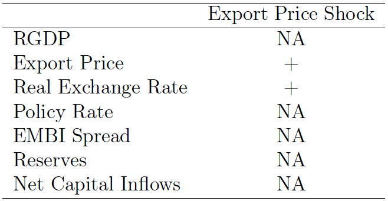
The same identification strategy has been imposed when analysing global financial shocks, making high global risk appetite conditions coincide with export price increases. The global financial condition has been modelled through an exogenous negative variation of the BAA spread. In this context, a positive response of the real exchange rate reflects an appreciation of the domestic currency typically associated with improved global financial conditions, such as increases in global liquidity. Constraining only the real exchange rate allows the shock to capture broad external financial conditions without imposing additional restrictions on domestic macroeconomic variables. Variables and constraints are presented in Table 2.
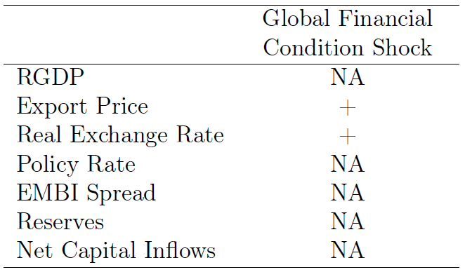
Even if statistical tests indicate that more lags could be included, the model is estimated using a BVAR with a single lag to conserve degrees of freedom while still capturing the key short-run dynamics in the data.6
The convergence criterion is controlled by setting the tolerance level to 0.001, meaning that draws are accepted only when the difference between two independent minimisation runs is sufficiently small.
To improve the precision of the impulse response function confidence bands, the estimation was conducted using a penalty parameter equal to 1000 and an increased number of retained draws set to 3000. The larger penalty strengthens the enforcement of the imposed sign-restrictions, thereby reducing the dispersion of admissible models, while the higher number of kept draws ensures a more stable approximation of the posterior distribution. Although these adjustments lead to a noticeable increase in computational cost, they contribute to producing tighter and more reliable confidence intervals for the IRFs.
Overall, this configuration is designed to achieve a balance between computational cost, robustness of the optimisation procedure and coherence with the imposed sign-restrictions.
Main Results
This section analyses the dynamic effects of a one-standard deviation positive shock to the export price level, identified in a Bayesian VAR with sign-restrictions.
The analysis examines whether fluctuations in commodity export prices can simultaneously affect real economic activity and cross-border financial flows, generating synchronised dynamics between output and capital movements.
In performing the analysis, the degree of dependence on commodity exports may play an important role in shaping the transmission of export price shocks across the economies considered. Countries that rely more heavily on commodity exports may experience stronger macroeconomic responses when export prices fluctuate, as commodity revenues represent a significant share of their external earnings and fiscal resources. To provide a clearer representation of these differences, Figure 1 reports the degree of dependence on exports of natural resources in selected periods for each country in the sample.7
Moreover, Appendix 7 presents preliminary results on lag length selection, unit root testing and the inclusion of a constant term in the model.
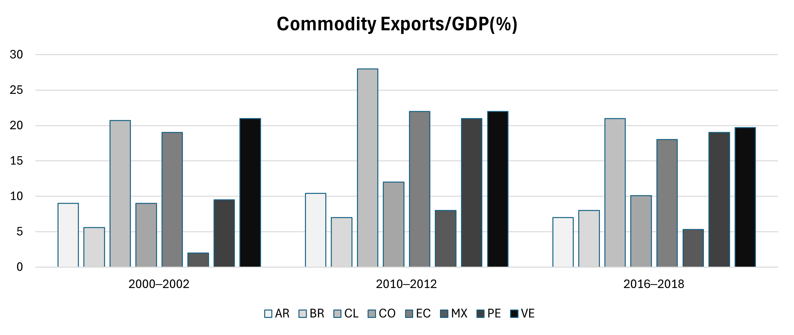
Impulse Responses to an Export Price Shock
Below, from Figure 2 to 9, the IRFs with 68% confidence bands are shown for each country.
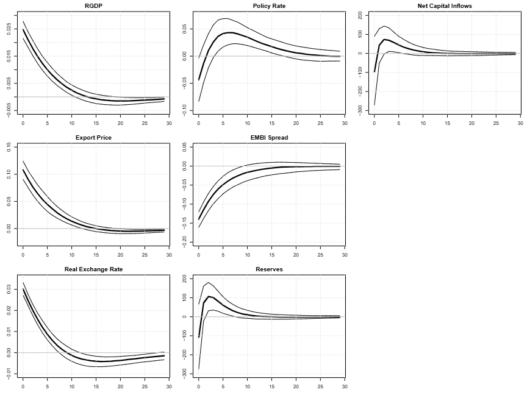
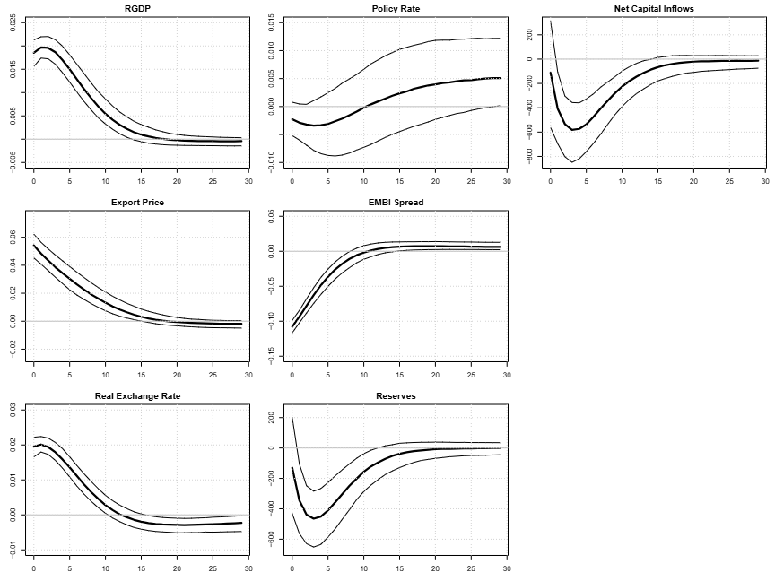
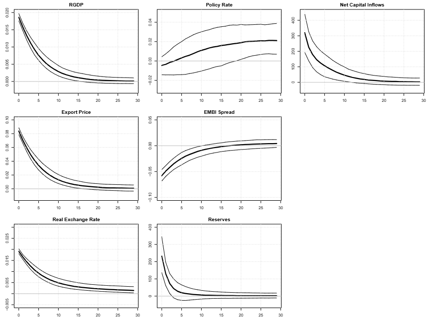
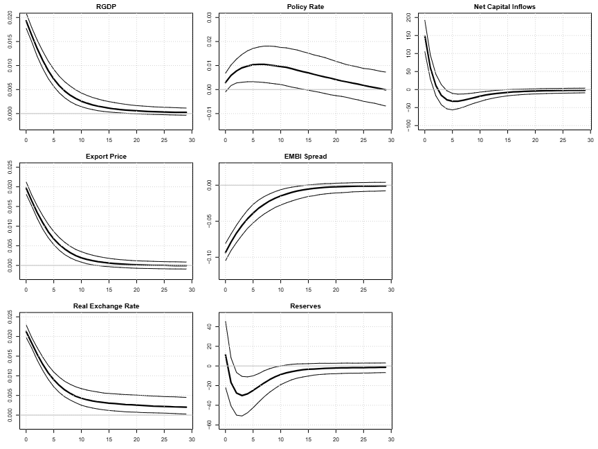
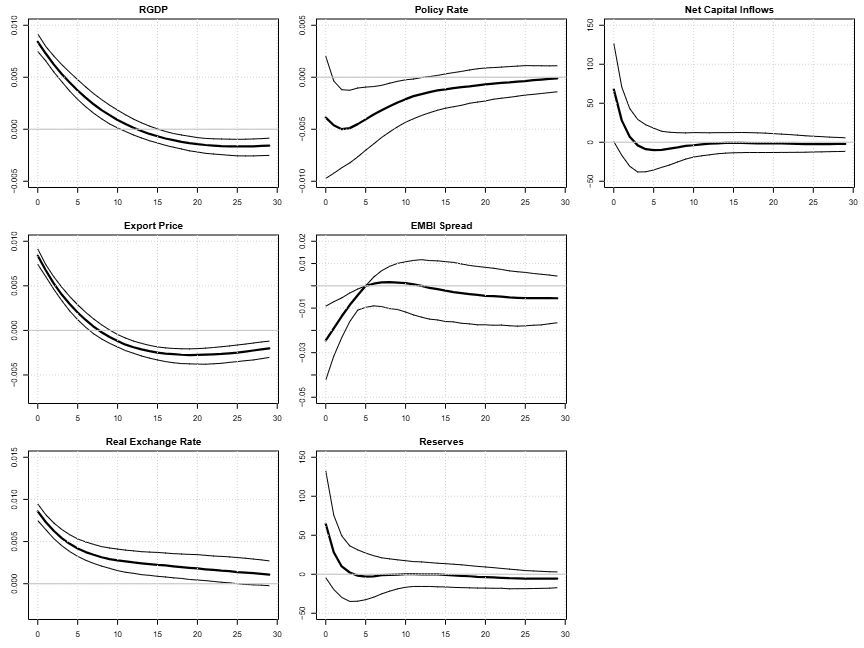
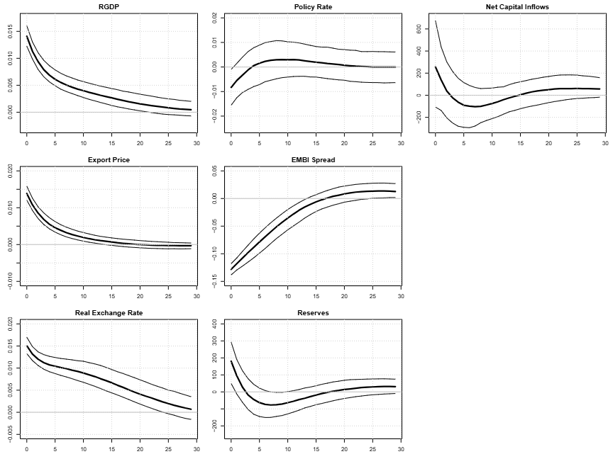
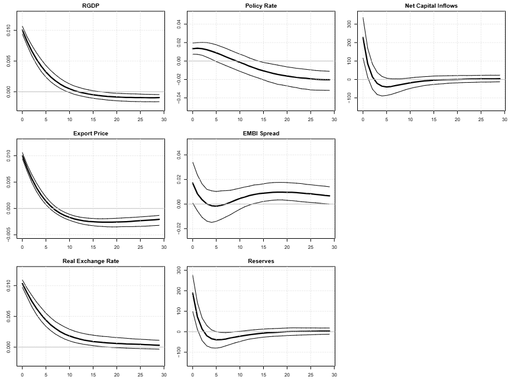
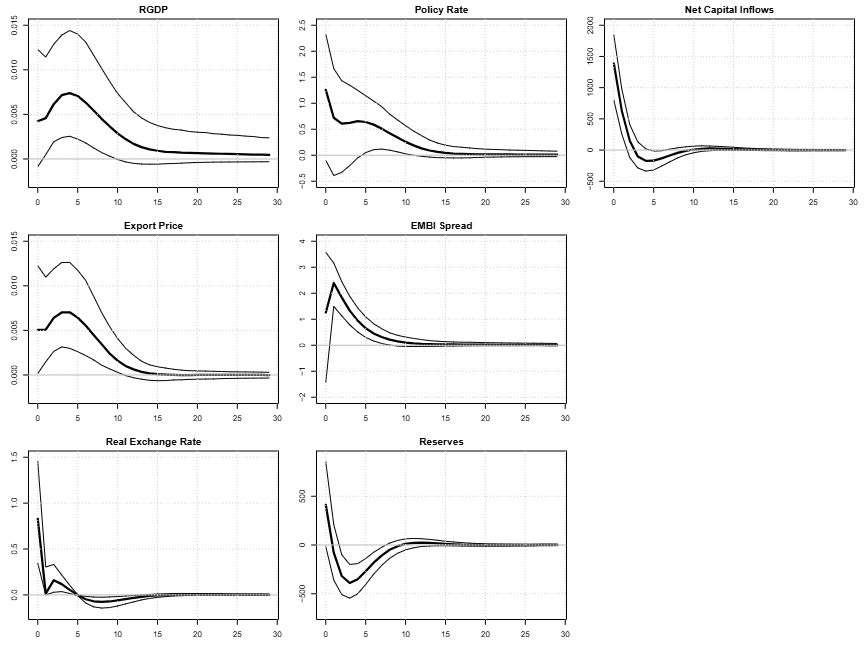
Rather than presenting country-by-country evidence, the analysis groups economies into two blocks according to the sign of the response of net capital inflows. The IRF comparison is presented in Figure 10 and 11. Overall, the impulse responses reveal substantial heterogeneity mainly in the behaviour of cross-border capital flows.
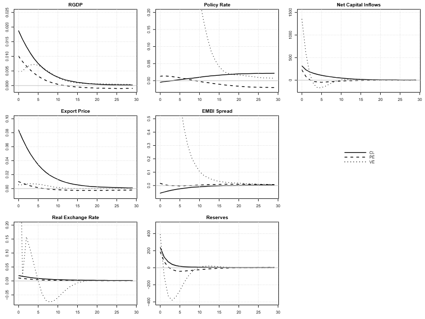
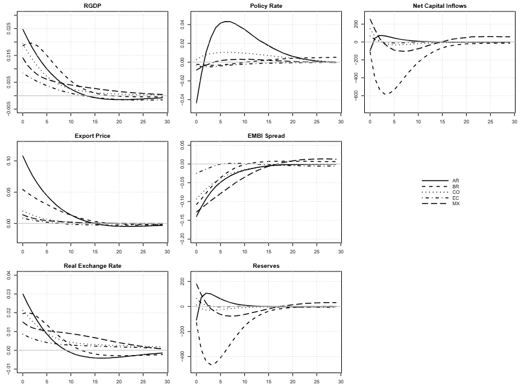
The countries have been classified based on the joint response of output and net capital inflows to export price shocks. Block I includes countries where export price shocks generate sustained inflows alongside rising output, reflecting strong synchronisation between real activity and financial flows, with positive comovement patterns between RGDP and net capital inflows. Block II includes countries where capital flows respond in a mixed or negative way, indicating weaker or absent comovement. The two blocks of countries are composed as follows:
Block I - Positive comovement: Chile, Peru and Venezuela
Block II - Mixed or negative comovement: Argentina, Brazil, Colombia, Ecuador and Mexico
Comovement is assessed based on the joint dynamic responses of output and net capital inflows to export price shocks, as captured by the impulse response functions. The two blocks classification allows the assessment of whether export price shocks generate positive comovement between real economic activity and capital flows.
By construction, the export price shock produces an immediate and positive response in the export price index across all countries, followed by a gradual mean reversion. The positive price shock translates into a contemporaneous increase in real economic activity. Across both blocks, the positive export price shock generates a set of macroeconomic dynamics compatible with a standard small-open economy framework. These results confirm that export price shocks operate primarily increasing export revenues and stimulating domestic demand. The imposed identification also generates an immediate real exchange rate appreciation, reflecting the typical transmission of commodity price booms through the domestic price level, irrespective of the exchange rate regime. EMBI spreads generally decline, indicating an improvement in sovereign risk perceptions, although the extent of compression varies across the sample. However, beyond these common macroeconomic effects, the dynamics of capital flows and reserves diverge across the two groups of countries.
Finally, policy rates show heterogeneous responses, reflecting differences in monetary policy reactions and financial conditions, while remaining relatively muted following the shock. Moreover, these responses are often not statistically significant.
In the BVAR estimated with monthly data, the horizon has been set to 30 steps. Such horizon is sufficiently long to capture the full dynamic adjustment of the variables, while avoiding the excessive uncertainty and noise that typically characterise long-horizon responses.
Block I: Positive Comovement Between Net Capital Inflows and Real GDP
In Chile, Peru and Venezuela, export price shocks generate strong positive responses of capital flows, with net capital inflows increasing alongside economic activity. A key feature shared by these economies in Block I is their relatively high dependence on natural resource exports within the sample. The resulting dynamics point to a synchronisation between business cycle fluctuations and capital flow movements, suggesting that in commodity-dependent economies external price shocks might operate as a common driver of both real and financial variables.
In such economies, increases in export price translate into higher export revenues and improved growth performance, which may attract foreign capital and induce investors to reallocate capitals toward these countries. As a result, export price increases not only stimulate domestic economic activity, but are also accompanied by an expansion of capital flows, with a positive surge of foreign liquidity within the country.
The positive response of net capital inflows is particularly persistent in Chile, while Peru and Venezuela display a similar pattern but with smaller magnitudes and less persistence. It should be noted that Venezuela’s RGDP response is only weakly statistically significant, indicating limited confidence in the estimate.
In these economies, positive export price shocks lead to an appreciation of the real exchange rate (constraint upward), reflecting improved terms of trade and stronger domestic economic conditions. However, rather than allowing the currency to appreciate further and attract additional foreign capital, monetary authorities may intervene in foreign exchange markets in order to preserve external competitiveness. The increase in reserves, motivated by an accumulation of foreign reserves, is compatible with this interpretation and suggests that central banks may intervene absorbing foreign currency from the market, in an effort to offset the appreciation pressures generated by the export shock and the liquidity generated by the capital inflows.
Overall, the evidence indicates that in these countries export price shocks tend to act as a transmission mechanism generating comovement between economic activity and international capital flows, highlighting the importance of the commodity channel in shaping macroeconomic fluctuations and confirming the existence of financial amplification in three of the most export-dependent countries of the sample.
Block II: Mixed or Negative Comovement Between Net Capital Inflows and Real GDP
In contrast, Argentina, Brazil, Colombia, Ecuador and Mexico display responses that differ considerably from those observed in the countries discussed previously. In the economies belonging to Block II, export price shocks are associated with net capital inflow responses that lead to mixed or negative comovement between RGDP and net capital inflows.
These economies, with the exception of Ecuador, are characterised by being relatively less dependent on commodity exports than Chile, Peru and Venezuela. Higher export revenues improve domestic liquidity and external balances, allowing governments and firms to rely less on foreign borrowing.
While the majority of Block II countries exhibit mixed comovement patterns, Brazil stands out with the most negative relationship between capital inflows and RGDP, displaying a persistent negative comovement over time. This suggests that capital flows tend to move counter to domestic output fluctuations in Brazil during this period.
The simultaneous decline in reserves that characterise some of these economies, induced by lower foreign reserves, may reflect balance of payments adjustments or reserve management. Because these countries rely less on commodity exports, policymakers may face weaker pressure to respond immediately to export price fluctuations through aggressive foreign exchange intervention. This greater policy flexibility allows authorities to accommodate exchange rate movements, allowing adjustments to occur more gradually following export price shocks through external balances and capital flow dynamics, rather than through active exchange rate management.
As a result, export price shocks in these economies generate a weaker link between business cycle dynamics and cross-border capital flows. While output still responds positively to favourable price movements, there is uncertainty about how capital flows move, leading to a partial decoupling between real economic activity and financial flows in this group of countries.
Ecuador stands out as a distinct case within the sample. While it is highly dependent on commodity exports, its capital flows response is more similar to Block II countries than Block I. Moreover, the increase in net capital inflows is comparatively weaker than all the other economies in Block II.
This pattern indicates that the improvement in export revenues does not translate into a pronounced corresponding increase in net capital inflows, reflecting Ecuador-specific structural factors that may limit the transmission of favourable commodity price movements to financial conditions and the flow of sources toward its economy.
This behaviour may reflect Ecuador’s institutional and financial characteristics, including its dollarised monetary regime and limited access to international capital markets (Fostel and Kaminsky, 2007; International Monetary Fund, 2019), which constrain the transmission of positive export price shocks into financial inflows.
Sovereign Risk Responses to Export Price Shocks
In most countries of the sample, the immediate effect of the shock is associated with a decline in sovereign spreads. At impact, EMBI spreads decrease in Argentina, Brazil, Chile, Colombia, Ecuador and Mexico, indicating an initial improvement in market perceptions of sovereign risk. It is worth noting that EMBI spread responses in Ecuador, Peru and Venezuela are less statistically significant compared to those of the other variables.
This pattern is compatible with the idea that favourable export price movements strengthen countries’ external positions and improve short-term macroeconomic performance in commodity-exporting economies.
However, this initial improvement proves to be short-lived in several economies. After the first periods following the shock, EMBI spreads increase again in several countries. This evidence suggests that although export price increases may initially improve sovereign risk perceptions, the effect is not persistent over time. Empirical evidence also suggests that increases in commodity prices are often associated with temporary improvements in sovereign risk conditions in emerging markets (Hamann et al., 2020).
Venezuela exhibits the most extreme behaviour among the countries analysed. The response of EMBI spreads is highly volatile and substantially larger in magnitude than in the rest of the sample. Such volatility is compatible with the macroeconomic instability experienced in the country during the sample period, characterised by hyperinflation, exchange-rate instability and significant policy volatility. These factors contribute to large fluctuations in sovereign spreads, making the response of financial variables to external shocks considerably less predictable.
Overall, the evidence suggests that while export price shocks can initially improve sovereign risk conditions in several commodity-exporting economies, these effects are temporary and vary in magnitude across the countries.
Global Financial Shocks and Capital Flows Composition
Export Price Shocks and Global Financial Conditions
The heterogeneous responses of capital flows documented above can be further interpreted through the lens of the global financial cycle.
The global financial cycle literature emphasises that international capital flows, risk premia and asset prices are strongly influenced by financial conditions and global risk appetite, defined as the willingness of investors to bear financial risk (European Central Bank, 2007). In this framework, external export price shocks can interact with global liquidity conditions to either amplify or dampen domestic financial responses.
In this section, the effects of global financial conditions shocks under high export price level are studied, in order to assess whether and how net capital inflow responses differ from one standard deviation export price shocks.
A global financial shock, implying eased global financial conditions or lower global risk sentiment, is modelled as reduction in the BAA spread. Figure 12 and 13 present the comparison of impulse response functions following a global financial conditions shock.
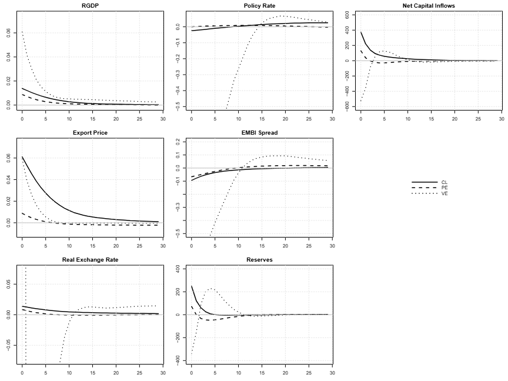
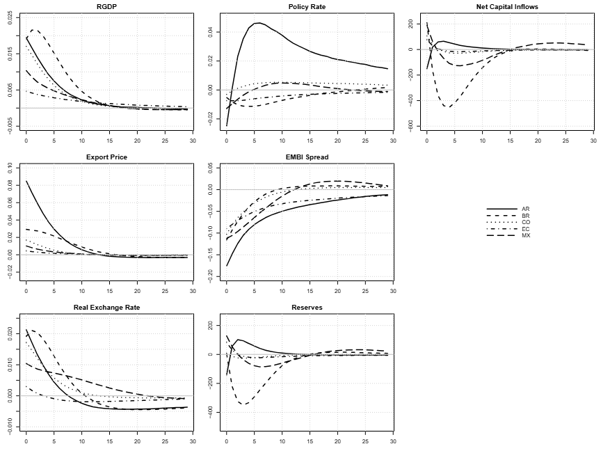
When global risk appetite is high, export price increases may coincide with abundant global liquidity, encouraging investors to expand their exposure to emerging markets. In such environments, an increase of export price level may trigger larger capital inflow episodes. This mechanism appears to operate in some Block I economies, namely Chile and Peru, which exhibit a larger expansion in cross-border capital inflows than that observed under the export price shock scenario. Venezuela is characterised by cross-border flows that exhibit dynamics largely different to those observed in response to export price shocks, with a predominant outflow of capitals.
In these cases, higher export revenues may improve macroeconomic prospects and attract further international investors. Empirical evidence suggests that improvements in global financial conditions are often associated with improvements in sovereign risk conditions and stronger financial inflows in commodity-dependent emerging markets (Özmen and Doğanay Yaşar, 2015).
However, this pattern is not observed uniformly across all countries in Block I, indicating that the transmission from export price shocks to capital inflows remains heterogeneous. These results suggest that capital inflows following export global financial condition shocks may be larger in periods of high export price level than in episodes driven solely by trade fundamentals, pointing to a not uniform financial amplification effect.
Misallocation of Capital and Financial Curse Risk
In the previous sections, two different blocks of countries have been defined, according to how capital flows react to export price shocks and the comovement with economic activity. However, given that certain countries are more attractive for investments than others, it is also important to understand the risks associated with surges in capital inflows. In order to better understand the role of net capital inflows, the IRFs have been computed also disaggregating the net capital inflows.
The components of the net capital inflows are: direct investments, equity investments, debt investments and other types of investments.
The result is presented in Figure 14 and 15.
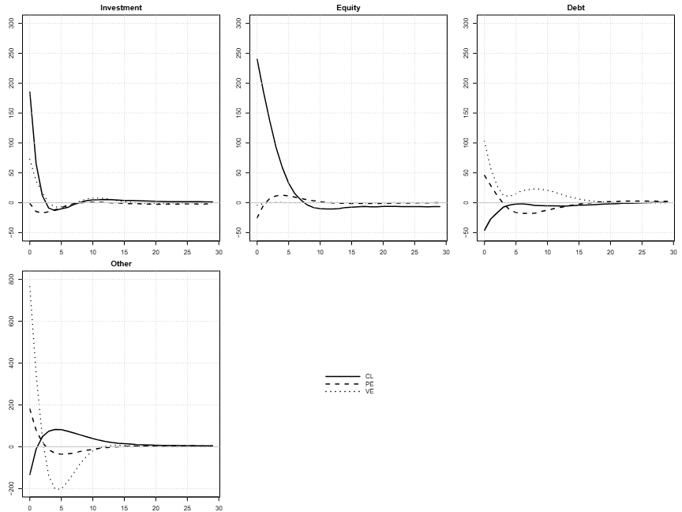
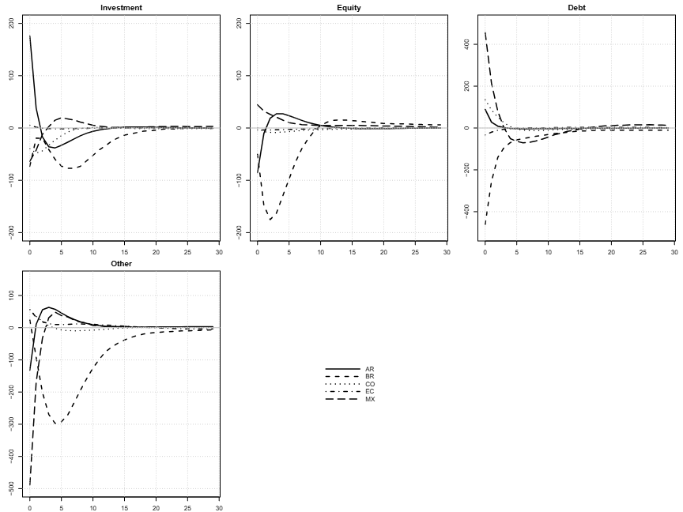
The economies studied are all characterised by being resource-endowed and structurally exposed to external shocks due to their export-dependent nature. In such environments, positive export price shocks not only influence the aggregate volume of capital inflows but may also alter their composition, with potentially important implications for capital allocation and macroeconomic stability.
The impulse responses of the different categories of capital flows reveal that export price shocks generate heterogeneous adjustments across direct investment flows, portfolio equity flows, portfolio debt flows and other investment flows. These responses vary considerably across the countries analysed.
The expansion of capital inflows following export price shocks is largely driven by short-term financial flows rather than by long-term investment. In particular, only Argentina exhibits responses in direct investment flows that are greater than those in equity, debt or other types of investment, although these responses are short-lived. Moreover, among the other countries, only Chile shows an equity response greater than debt or other investments.
This pattern suggests that positive export price shocks may trigger an increase in cross-border flows that is concentrated in more liquid and reversible forms of capital. Such dynamics are compatible with the idea that export price increases, such as commodity price booms, can stimulate external borrowing and short-term financial flows rather than generating an increase in productive investment.
Brazil is the country characterised by the most pronounced declines across investment, debt and other financial flows components. This behaviour could suggest that export price shocks do not necessarily translate into greater external financing and may instead coincide with reductions in foreign exposure or balance sheet adjustments.
From a broader perspective, the composition of capital flows observed in the impulse responses is compatible with mechanisms related to the concept of the financial resource curse, which extends the traditional Dutch disease framework to the financial sector (Esquivel, 2010). In the presence of commodity windfalls and advantageous external financing conditions, capital inflows may become concentrated in short-term financial instruments rather than long-term productive investment. Broader literature on resource-rich economies highlights that the reliance on commodity exports may also generate long-term structural distortions in financial development. In particular, financial resource curse suggests that abundant natural resource revenues can reduce incentives to develop a deep financial system, leading to underinvestment in financial intermediation and potentially weaker long-run growth outcomes (Beck, 2011). The impulse responses provide empirical support for this interpretation.
In the economies studied, total capital inflows are largely composed of debt and other financial flows, suggesting that commodity booms may be accompanied by expansions in external borrowing and short-term financial activity rather than by increases in productive investment, which may limit the capacity of these economies to transform commodity windfalls into stronger economic expansion.
Finally, historical experience shows that episodes of large financial inflows are often followed by abrupt reversals, commonly referred to as sudden stops. The impulse responses in the present analysis highlight this potential vulnerability. Categories of flows such as debt and other types of investment are precisely those that have historically been associated with episodes of financial volatility and crises in emerging markets.
Consequently, export price booms may simultaneously generate short-term financial expansion and longer-term macroeconomic vulnerabilities, particularly in economies where capital inflows are concentrated in more liquid and reversible forms of financial investment rather than in stable productive capital.
These findings highlight that the consequences of commodity price fluctuations depend on domestic macroeconomic conditions, its financial attractiveness and its real economy. For small-open economies dependent on commodity exports, strengthening institutional and governance credibility, reducing sovereign risk premia, may therefore be key to transforming external price windfalls into sustained financial inflows and investment-driven growth.
This is in line with empirical evidence that show how export-dependent countries tend to be associated with phenomena of political oppression, inequality and corruption as well as lack of financial depth (Gylfason, 2001; Bhattacharyya and Hodler, 2014). Good institutions can play a positive role in ensuring better law enforcement and limiting the excessive reliance on commodity windfalls (Mlachila and Ouedraogo, 2020). Furthermore, the poor quality of governance and institutions could negatively affect risk premia, discouraging international investors from investing in the country with long-term investments.
Moreover, evidence indicates that in export-dependent economies the export price shocks triggering capital flows are often associated with lower levels of financial development compared to countries that rely less heavily on commodity exports (Hausmann and Rigobon, 2003; Hattendorff, 2014), suggesting that abundant natural resource revenues may weaken incentives to develop efficient domestic financial systems.
Finally, the adoption of robust fiscal rules and policy interventions play a crucial role to prevent the resource misallocation from lowering the growth rate of the economy (Benigno and Fornaro, 2014; Arezki et al., 2014).
Conclusion
This analysis shows that the effects of export price shocks in small-open and commodity-exporting economies are heterogeneous. Two main patterns emerge: in some countries, export price shocks generate positive capital flows comovement, with net inflows increasing alongside economic activity, while in others they lead to mixed or negative responses despite improvements in output.
Positive comovement dynamics seem to be more pronounced in economies with a high degree of commodity dependence, suggesting that external price shocks can act as a common driver of both real and financial variables.
Moreover, in countries relying less on commodity exports, policymakers may face weaker pressure to respond immediately to export price fluctuations through foreign exchange intervention, allowing adjustments following export price shocks to occur more gradually, through external balances and capital flow dynamics.
The results also indicate that improvements in sovereign risk perceptions following export price increases are generally short-lived, highlighting the limited persistence over time.
In periods of high global risk appetite, export price increases may coincide with abundant liquidity, amplifying capital inflows. However, this financial amplification mechanism does not operate uniformly across the countries studied.
In addition, the composition of capital flows suggests that export price booms tend to stimulate short-term financial flows. This pattern raises concerns about the risk of a financial resource curse, as such booms may encourage external borrowing and short-term financial inflows rather than encouraging an increase in productive investment.
To mitigate these risks, policy efforts should focus on strengthening institutional quality and governance, enhancing financial market development and reducing excessive reliance on commodity revenues. In addition, the adoption of robust fiscal frameworks is essential to prevent resource misallocation and to ensure that commodity windfalls are effectively transformed into sustainable economic growth.
Data Sources, Definitions and Transformations
Sample of Countries
The countries chosen for the analysis are: Argentina (AR), Brazil (BR), Chile (CL), Colombia (CO), Ecuador (EC), Mexico (MX), Peru (PE) and Venezuela (VE). The countries have been chosen among those that are members of the Economic Commission for Latin America and the Caribbean (ECLAC) and that belong to the Central or South America region, on the basis of availability of data and on their weight in terms of GDP.8 All the chosen countries have been persistently among the best performing economies in Latin America in terms of GDP since 2024, as Table 3 highlights.9
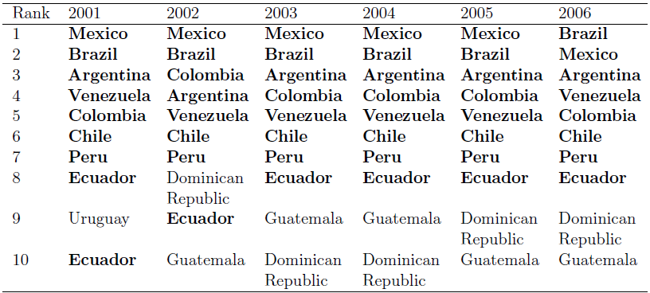
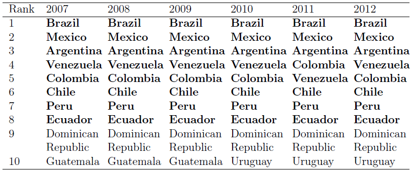
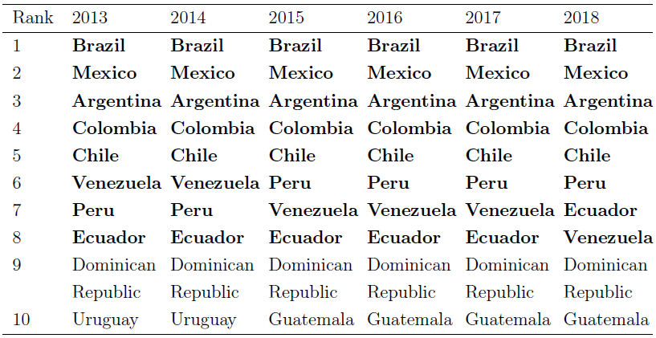
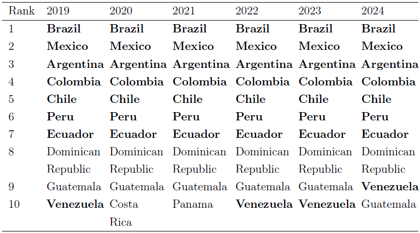
Note: The table below presents the ten Latin American largest economies ranked by nominal GDP in U.S. dollars over the period 2001-2024. The table illustrates the evolution of the role of Latin America’s largest economies across time. Argentina, Brazil, Chile, Colombia, Ecuador, Mexico and Peru have been persistently the best performers across Latin America countries, with Venezuela being one of the best performers in the first years of the 2000s and, rapidly, declining its performance at the point of ending out of the list or occupying the lowest positions. Major economies are highlighted in bold.
Variables Included in the Bayesian VAR
This section provides a detailed description of the time series employed in the empirical analysis. Each variable is accompanied by information about the source, the data type and the frequency. The final dataset combines macroeconomic and financial variables in order to capture the transmission channels of export price and global financial condition shocks in Latin American economies.
Real Gross Domestic Product (RGDP)
In this paper, RGDP (RGDP) is measured using gross domestic product at purchasing power parity (PPP), obtained from the International Monetary Fund (IMF). GDP at PPP adjusts national output for differences in price levels across countries, measured in U.S. Dollars.
Original frequency: Annual
Transformation: Interpolated to monthly frequency and log-linearised
This variable captures domestic real economic activity and serves as the main indicator of output dynamics in the VAR.
Export Price
Country-level export price indices have been collected from the World Bank. These indices measure the unit value of exported goods and serve as a proxy for external terms-of-trade movements in commodity-exporting economies.
Frequency: Annual
Transformation: Interpolated to monthly frequency and log-linearised
This variable is fundamental in the identification of export price shocks.
Real Exchange Rate
The real exchange rate series has been retrieved from the Bruegel Real Effective Exchange Rate (REER) dataset.
Frequency: Monthly
Transformation: Log-linearised
The REER \(Q_{i,E,t}\) computed by Bruegel captures the international price competitiveness of a country relative to its trading partners. The definition of Bruegel’s REER is the following:
\[Q_{i,E,t} = S_{i,E,t} \frac{P_{i,t}}{P_{W,t}}\]
where:
\(S_{i,E,t}\): Nominal effective exchange rate (geometric average of bilateral rates)
\(P_{i,t}\): Domestic price level
\(P_{W,t}\): Trading partners’ price levels (geometric average)
The country is defined with the letter \(i\). \(E\) stands for \(Effective\), to indicate that the real exchange rate of the country is against a basket of currencies considered among the trading partners. \(W\) refers to \(World\) and indicates the aggregate countries included in the basket. Finally, \(t\) is the time period. A rise in \(Q_{i,E,t}\) typically means a real appreciation.10 Geometric weighting is implemented in order to ensure symmetry and to avoid base-year distortions (Darvas, 2024).
Policy Rate
Policy interest rates (percent) are sourced from different institutions depending on the country, due to data availability issues. For Argentina, Brazil, Chile, Colombia, Mexico and Peru data have been collected from the Bank for International Settlements Data Portal, while for Ecuador and Venezuela data have been gathered, respectively, from Refinitiv and CEPALSTAT’s Databank.
Frequency: Monthly
Transformation: Log-linearised
Policy rates proxy for the stance of domestic monetary policy and help capturing policy responses to external shocks.
Emerging Markets Bond Index (EMBI) Spread
The EMBI spread, obtained from the Banco Central de Reserva del Perú, measures sovereign bond spreads relative to U.S. Treasury securities. Investors use the EMBI, calculated by J.P. Morgan Chase based on the performance of each country’s external debt.
Frequency: Daily
Transformation: Aggregated to monthly averages and log-linearised
The higher is the EMBI Spread associated to a country and the higher is the uncertainty that a country meets its obligations. EMBI Spread percentage measures the extra return investors demand for taking on the credit risk of emerging market sovereign debt, as well as being an indicator sensitive to risk premia (Gamboa-Estrada and Romero, 2021).11
Reserves
Reserve assets are foreign currency assets and assets that actually exist available to monetary authorities and controlled by them for the purpose of financing balance of payments imbalances.12
Frequency: Quarterly
Transformation: Interpolated to monthly frequency
Reserves can be used to intervene in foreign exchange markets to influence the exchange rate and to support related objectives (such as maintaining confidence in the domestic currency and facilitating external borrowing).
Net Capital Inflows
Net capital inflows are defined as capital inflows minus capital outflows. Higher values indicate stronger net financial inflows and a larger external liability position. Data have been obtained from the International Monetary Fund Data Warehouse, in particular from the Balance of Payment analytic presentation (published according to the 6th Edition of the Balance of Payments Manual (BPM6)), where each BOP line item is entered in millions of U.S. Dollars.13
Frequency: Quarterly
Transformation: Interpolated to monthly frequency
The computed net capital inflows are the result of an aggregation of different flows, which are:
Direct investment: Direct investors’ investment in direct investment enterprises (investment income flows between the direct investor and its direct investment enterprises), reverse investment (investment income flows on liabilities of direct investors to their direct investment enterprises and on claims of direct investment enterprises on their direct investors), investment between fellow enterprises (investment income flows between all fellow enterprises that belong to the same direct investment group)14
Portfolio equity investment: Portfolio investment income includes income flows between residents and nonresidents arising from positions in equity securities15
Portfolio debt investment: Portfolio investment income includes income flows between residents and nonresidents arising from positions in debt securities16
Other investment: This category of flows covers a wide range of flows, that could not be classified in none of those previously defined17
These variables capture financial openness and exposure to global capital flow dynamics.
Derivatives have been excluded due to data limitations. When these derivatives are included, the net difference between capital inflows and capital outflows represents the financial account balance, which (aside from any statistical discrepancy) mirrors the current account balance.
BAA Spread
The BAA spread percent (Moody’s Seasoned BAA Corporate Bond Minus Federal Funds Rate) has been obtained from the Federal Reserve Economic Data database.
Frequency: Monthly
Transformation: No transformation is needed
This variable proxies global financial conditions and captures risk sentiment in advanced economies. A decline in the BAA spread represents a reassuring global financial conditions indicator.
Data Transformations
The dataset includes annual, quarterly, daily and monthly series. For consistency within the Bayesian VAR framework, all variables are converted to monthly frequency. In doing so, the two main problems were related to the presence of missing data and to the inconsistency of frequency across the variables.
Log-linearisation
Prior to the VAR estimation some of the variables have been log-linearised. The variables affected are: real GDP, export price level, policy rate, EMBI spread and real exchange rate.
Log-linearisation has been implemented mainly to deal with the numerical collinearity exhibited by the data, that could lead to a nearly singular regressor matrix and to the failure of the reduced-form VAR estimation. Stabilisation of variances through log-linearisation mitigates near-linear dependence among regressors, ensuring numerical invertibility of the structural impact matrix (contemporaneous impact matrix). The failure of the conversion of the structural matrix without log-linearisation could point out to the presence of strongly trending series.
Missing values
Missing data problems is a typical issue in analyses where macroeconomic data are used. The seriousness of the problem depends on the amount of missing values within the dataset. In order to reduce as much as possible the weight of the amount of missing values out of the total amount of observations the period included between 2001M1 to 2019M12 has been selected for performing the analysis. The only exception was Venezuela. In fact, for this country, the best time period to minimise the weight of interpolated data is between 2001M1 and 2013M10.
Missing observations in the dataset were addressed using cubic spline interpolation. This method has been preferred to the linear interpolation because, compared to it, cubic splines better preserve the underlying dynamics of macroeconomic time series by allowing for gradual curvature between observations. The advantage of spline interpolation is that it produces smaller interpolation errors than linear and polynomial approaches and that the interpolated values are smoother (Moosa and Burns, 2013). The interpolation has been implemented in Python, using the package UnivariateSpline and, in particular, setting the degree of the smoothing spline at \(k=3\).
From High to Low-Frequency Data
The next step, after having addressed the problem of missing values, consists in preparing a homogeneous dataset in terms of frequency.
There are several different methods to implement an interpolation to a lower frequency dataset and, in this context, a Denton interpolation approach for calendarisation has been followed.
In theory, cubic spline approach could be adopted also for the conversion of the dataset from a lower frequency to a higher, as it minimises artificial volatility while maintaining realistic transitional patterns. In practice a spline interpolation might be extremely ineffective, underestimating the effect of some variables, like real GDP, not leading to pertinent results (Angelini, Henry and Marcellino, 2003).
The choice of a Denton interpolation is motivated by empirical evidence showing that the Denton method delivers the most coherent and economically meaningful estimated impulse response functions. Potential extensions involve the implementation of Chow and Lin algorithms and factor models to create the high-frequency dataset starting from low-frequency (Abberger, Graff, Müller and Siliverstovs, 2020).
Consider a variable \(y_l\), associated with a total number of observed periods \(l = 1, \ldots, L\). Variable \(y_l\) is characterised by having as starting period \(t_{1,l}\) and as ending period \(t_{2,l}\). The sum of unobserved high-frequency values, where one single value is \(\theta_s\), is presented below:
\[y_t = \sum_{s=t_{1,t}}^{t_{2,t}} \theta_s\]
The goal of the interpolation is to estimate the target (unobserved) high-frequency values \(\theta_s\) in the time period that ranges from \(t_{1,1}\) to \(t_{2,L}+h\), where \(t_{2,L}+h\) is the last target ending period, in order to obtain a dataset in monthly frequency, that in this context is the target frequency.
The temporal disaggregation process involves a high-frequency indicator which is used as a proxy to represent the high-frequency level of activity (Quenneville, Picard and Fortier, 2013). When the high-frequency indicator is not available, it could be assumed to be constant. Given the high-frequency indicator, a further step is to benchmark the indicator to the reported values. In this research the high-frequency indicator used is the real exchange rate.
Under this framework, a basic version of the proportional Denton benchmarking technique has been implemented in Python using an apposite package called denton.18
Calendarisation process could be used for several types of disaggregation of time series, for example, the interpolation of gross domestic product into quarterly or monthly. In this research the calendarisation to higher (monthly) frequency is applied to real GDP, export price level, net capital inflows and reserve flows.
Detrending
To isolate cyclical fluctuations from long-term trends, selected time series were processed using the Hodrick-Prescott (HP) filter. This filtering technique decomposes a series into a smooth trend component and a cyclical component by minimising a loss function that penalises deviations from trend and excessive variation in the trend growth rate. The smoothing parameter determines the degree of trend smoothness and is chosen according to the data frequency.
HP filtering has been computed in Python, using the statsmodels package. The smoothing parameter has been set to 129600, since the final dataset is in monthly frequency.19
Preliminary Time Series Analysis
Lag Length
The lag length of the VAR is set to \(p=1\). Although Akaike Information Criterion (AIC), Hannan-Quinn Information Criterion (HQIC), Bayesian Information Criterion (BIC) and Final Prediction Error (FPE) suggest higher lag orders, as presented in Table 4, the number of parameters in a VAR grows rapidly with both the number of variables and lags. This, combined with small number of observations, may lead to over-parameterisation and unstable estimates. For this reason, following Bayesian VAR literature, in this study parsimonious specifications combined with a reasonably big penalty in the PFM have been chosen.
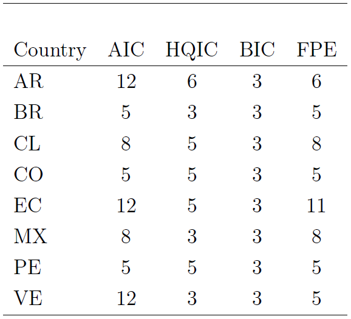
ADF Test
Table 5 presents the Augmented Dickey-Fuller (ADF) test statistics for each country. All variables reject the unit root at both 5% and 10% confidence levels, with all values being greater than the respective critical values (-2.88 for 5% and 2.57 for 10%).
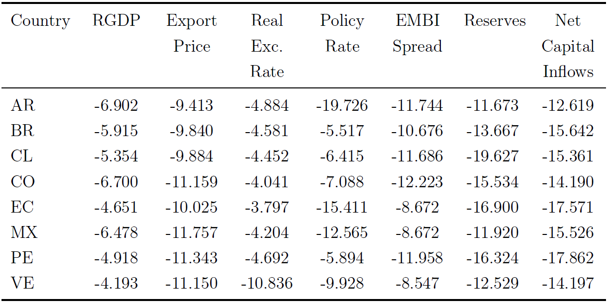
LR Test for Constant
The null hypothesis for exclusion of the deterministic trend cannot be rejected when applying a Likelihood-Ratio test (p-value very large for each country), as expected from HP-filtered data series. Including a constant would not significantly improve the model for any of the countries in the sample. Results are presented in Table 6.
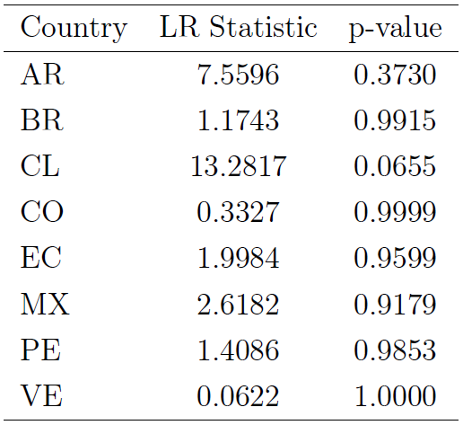
References
Main source of reference is the Natural resources outlook in Latin America and the Caribbean 2023 Report realised by the Economic Commission for Latin America and the Caribbean (ECLAC).↩︎
BAA spread is measured as Moody’s Seasoned BAA Corporate Bond yield minus the Federal Funds Rate.↩︎
A mathematical demonstration of this can be found in "Conjugate Bayesian analysis of the Gaussian distribution" by Murphy (2007), where, through the derivation of the normal‑inverse Wishart conjugate prior, it is shown how the posterior remains in the same family.↩︎
VARsignR package provides fast and efficient algorithms for Bayesian estimation of Structural VAR models. The main idea is that, through the combination of econometric techniques and different numerical routines, high computational performance is ensured while maintaining flexibility in model specification.↩︎
In commodity-exporting economies, fluctuations in export prices constitute the main source of variation in the terms of trade, defined as the ratio of export prices to import prices. When import prices are relatively stable or they grow at a slower rate than the export price level, shocks to export prices could be translated into terms of trade shocks.↩︎
Graphic elaborated from Natural resources outlook in Latin America and the Caribbean 2023 Report and United Nations Comtrade Database.↩︎
The ECLAC is one of the five commissions of the United Nations, established in 1948 to promote economic and social development through regional cooperation and integration, while the list of countries belonging to Central or South America could be consulted within the UN Standard country or area codes for statistical use (M49) database.↩︎
Table 3 has been built using the interactive dataset about the GDP (in U.S. Dollars) of Latin America countries realised by the World Bank.↩︎
A real appreciation is in place whenever domestic goods become more expensive relative to foreign goods.↩︎
The EMBI Spread is the difference between the interest rates paid on U.S. dollar-denominated bonds issued by emerging market countries and the yields on U.S. Treasury bonds, which are considered risk-free.↩︎
In particular, reserves are composed of reserve assets (monetary gold, monetary gold under swap for cash, special drawing rights, reserve position in the IMF and other reserve assets) and reserve liabilities (short-term liabilities and other short-term foreign currency liabilities to nonresidents) (International Monetary Fund, 2009).↩︎
Under the paradigm defined in BPM6, in the financial account, increases in assets (or increases in liabilities) are identified with positive amounts and decreases in assets (or decreases in liabilities) are identified as negative amounts (International Monetary Fund: Balance of Payments Statistics: Introductory Notes, as of November, 2024).↩︎
Reference number 11.97 in "Balance of Payments Statistics: Introductory Notes" by International Monetary Fund (2024).↩︎
Reference number 11.103 in "Balance of Payments Statistics: Introductory Notes" by International Monetary Fund (2024).↩︎
Reference number 11.103 in "Balance of Payments Statistics: Introductory Notes" by International Monetary Fund (2024).↩︎
Other investment income covers flows between resident and nonresident institutional units in regard to interest on deposits, loans, trade credit and advances and other accounts receivable/payable. Moreover, this category includes the income on equity and investment fund shares that are not classified in any other functional categories. In addition, investment income attributable to policyholders in insurance, standardised guarantees and pension funds could be found within other investment category. Interest payable on Special Drawing Right allocations is also recorded under other investment income. Finally, fees for non-monetary gold loans should also be included in interest under other investment income. Reference number 11.106 in "Balance of Payments Statistics: Introductory Notes" by International Monetary Fund (2024).↩︎
Package based on Chapter 6 of "Quarterly National Accounts Manual - 2017 Edition"↩︎
The smoothing parameter, defined as \(\lambda\) has been scaled with the fourth power of the change in data frequency. So, since for quarterly data the default value is \(\lambda = 1600\), for annual data the corresponding value is \(\lambda = 1600/4^{4} = 6.25\) and for monthly data it is \(\lambda = 1600 \times 3^{4} = 129600\) (Ravn and Uhlig, 2002).↩︎